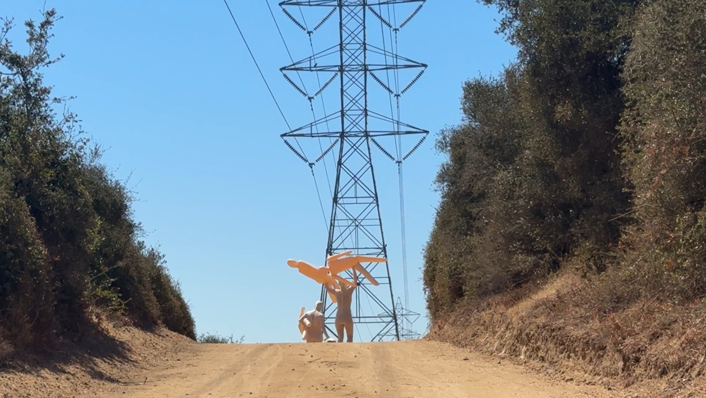
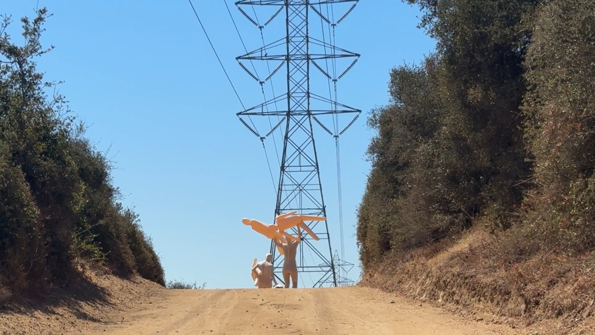
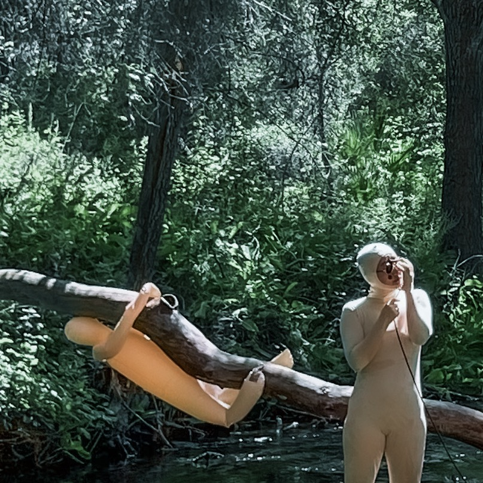
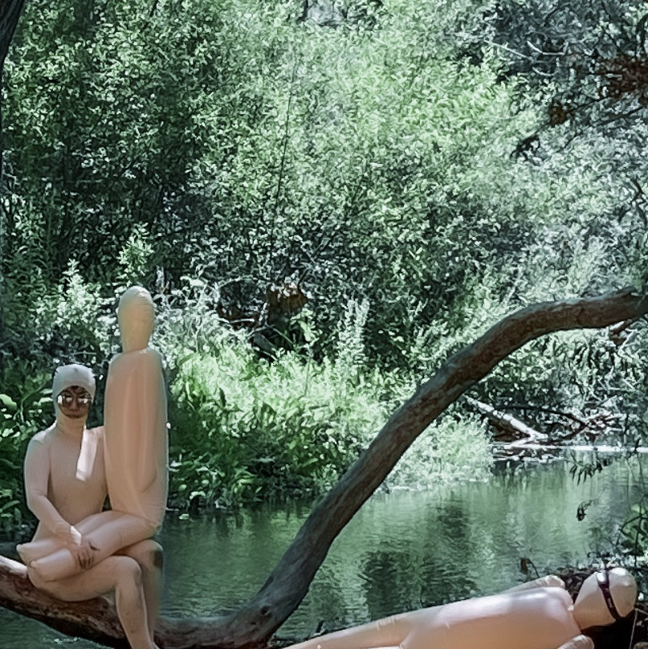
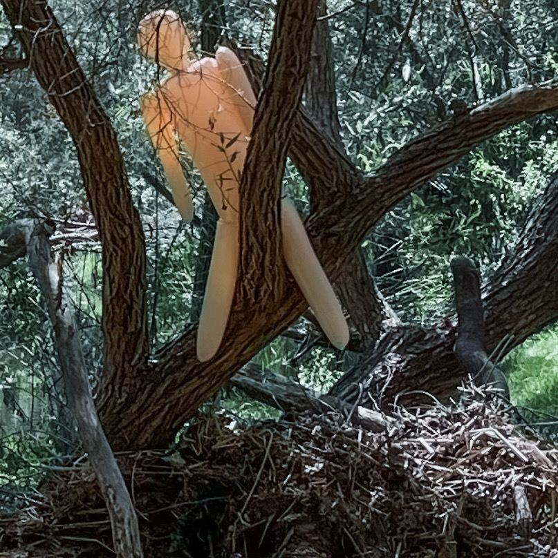
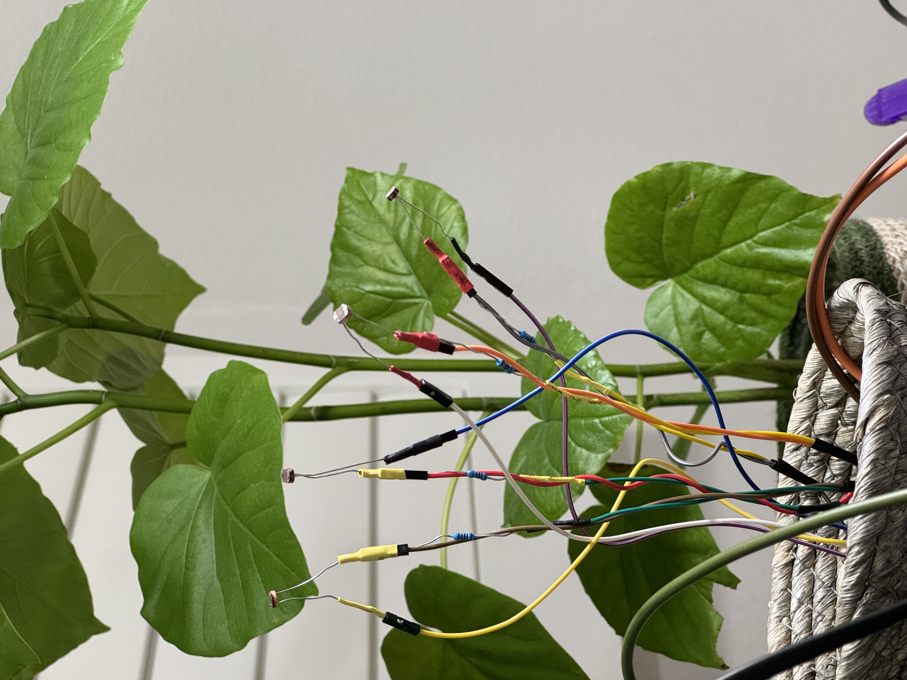

De-dimension (2025)
Audience-participatory installation with self-designed interactive instrumental system, audiovisual ecology, and three live improvisers
āññā duo @ Oracle Egg, BROILER Series Residency, Los Angeles
Link to view more.
 

  
Demo of the DIY instrument:
Press 'Enter' to return to the previous page.